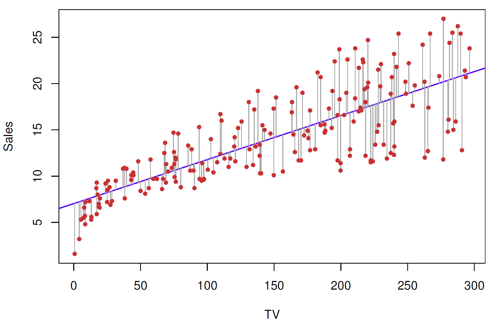

<!DOCTYPE html>
<html lang="es" xml:lang="es">
<head>

  <meta charset="utf-8" />
  <meta http-equiv="X-UA-Compatible" content="IE=edge" />
  <title>Capítulo 7 Regresión lineal | Ciencia de Datos</title>
  <meta name="description" content="BCRA" />
  <meta name="generator" content="bookdown 0.45 and GitBook 2.6.7" />

  <meta property="og:title" content="Capítulo 7 Regresión lineal | Ciencia de Datos" />
  <meta property="og:type" content="book" />
  
  <meta property="og:description" content="BCRA" />
  <meta name="github-repo" content="msangia/msangia.github" />

  <meta name="twitter:card" content="summary" />
  <meta name="twitter:title" content="Capítulo 7 Regresión lineal | Ciencia de Datos" />
  <meta name="twitter:site" content="@msangia" />
  <meta name="twitter:description" content="BCRA" />
  

<meta name="author" content="Máximo Sangiácomo" />


  <meta name="viewport" content="width=device-width, initial-scale=1" />
  <meta name="apple-mobile-web-app-capable" content="yes" />
  <meta name="apple-mobile-web-app-status-bar-style" content="black" />
  
  
<link rel="prev" href="conceptos.html"/>
<link rel="next" href="shrinkage-methods.html"/>
<script src="libs/jquery-3.6.0/jquery-3.6.0.min.js"></script>
<script src="https://cdn.jsdelivr.net/npm/fuse.js@6.4.6/dist/fuse.min.js"></script>
<link href="libs/gitbook-2.6.7/css/style.css" rel="stylesheet" />
<link href="libs/gitbook-2.6.7/css/plugin-table.css" rel="stylesheet" />
<link href="libs/gitbook-2.6.7/css/plugin-bookdown.css" rel="stylesheet" />
<link href="libs/gitbook-2.6.7/css/plugin-highlight.css" rel="stylesheet" />
<link href="libs/gitbook-2.6.7/css/plugin-search.css" rel="stylesheet" />
<link href="libs/gitbook-2.6.7/css/plugin-fontsettings.css" rel="stylesheet" />
<link href="libs/gitbook-2.6.7/css/plugin-clipboard.css" rel="stylesheet" />


<link href="libs/anchor-sections-1.1.0/anchor-sections.css" rel="stylesheet" />
<link href="libs/anchor-sections-1.1.0/anchor-sections-hash.css" rel="stylesheet" />
<script src="libs/anchor-sections-1.1.0/anchor-sections.js"></script>
<html>
  <head>
	<link rel="shortcut icon" href="images/favicon.png" />
  </head>
  <body>
  </body>
</html>


<style type="text/css">
pre > code.sourceCode { white-space: pre; position: relative; }
pre > code.sourceCode > span { line-height: 1.25; }
pre > code.sourceCode > span:empty { height: 1.2em; }
.sourceCode { overflow: visible; }
code.sourceCode > span { color: inherit; text-decoration: inherit; }
pre.sourceCode { margin: 0; }
@media screen {
div.sourceCode { overflow: auto; }
}
@media print {
pre > code.sourceCode { white-space: pre-wrap; }
pre > code.sourceCode > span { display: inline-block; text-indent: -5em; padding-left: 5em; }
}
pre.numberSource code
  { counter-reset: source-line 0; }
pre.numberSource code > span
  { position: relative; left: -4em; counter-increment: source-line; }
pre.numberSource code > span > a:first-child::before
  { content: counter(source-line);
    position: relative; left: -1em; text-align: right; vertical-align: baseline;
    border: none; display: inline-block;
    -webkit-touch-callout: none; -webkit-user-select: none;
    -khtml-user-select: none; -moz-user-select: none;
    -ms-user-select: none; user-select: none;
    padding: 0 4px; width: 4em;
    color: #aaaaaa;
  }
pre.numberSource { margin-left: 3em; border-left: 1px solid #aaaaaa;  padding-left: 4px; }
div.sourceCode
  {   }
@media screen {
pre > code.sourceCode > span > a:first-child::before { text-decoration: underline; }
}
code span.al { color: #ff0000; font-weight: bold; } /* Alert */
code span.an { color: #60a0b0; font-weight: bold; font-style: italic; } /* Annotation */
code span.at { color: #7d9029; } /* Attribute */
code span.bn { color: #40a070; } /* BaseN */
code span.bu { color: #008000; } /* BuiltIn */
code span.cf { color: #007020; font-weight: bold; } /* ControlFlow */
code span.ch { color: #4070a0; } /* Char */
code span.cn { color: #880000; } /* Constant */
code span.co { color: #60a0b0; font-style: italic; } /* Comment */
code span.cv { color: #60a0b0; font-weight: bold; font-style: italic; } /* CommentVar */
code span.do { color: #ba2121; font-style: italic; } /* Documentation */
code span.dt { color: #902000; } /* DataType */
code span.dv { color: #40a070; } /* DecVal */
code span.er { color: #ff0000; font-weight: bold; } /* Error */
code span.ex { } /* Extension */
code span.fl { color: #40a070; } /* Float */
code span.fu { color: #06287e; } /* Function */
code span.im { color: #008000; font-weight: bold; } /* Import */
code span.in { color: #60a0b0; font-weight: bold; font-style: italic; } /* Information */
code span.kw { color: #007020; font-weight: bold; } /* Keyword */
code span.op { color: #666666; } /* Operator */
code span.ot { color: #007020; } /* Other */
code span.pp { color: #bc7a00; } /* Preprocessor */
code span.sc { color: #4070a0; } /* SpecialChar */
code span.ss { color: #bb6688; } /* SpecialString */
code span.st { color: #4070a0; } /* String */
code span.va { color: #19177c; } /* Variable */
code span.vs { color: #4070a0; } /* VerbatimString */
code span.wa { color: #60a0b0; font-weight: bold; font-style: italic; } /* Warning */
</style>

<style type="text/css">
  
  div.hanging-indent{margin-left: 1.5em; text-indent: -1.5em;}
</style>
<style type="text/css">
/* Used with Pandoc 2.11+ new --citeproc when CSL is used */
div.csl-bib-body { }
div.csl-entry {
  clear: both;
  margin-bottom: 0em;
}
.hanging div.csl-entry {
  margin-left:2em;
  text-indent:-2em;
}
div.csl-left-margin {
  min-width:2em;
  float:left;
}
div.csl-right-inline {
  margin-left:2em;
  padding-left:1em;
}
div.csl-indent {
  margin-left: 2em;
}
</style>

<link rel="stylesheet" href="css/style.css" type="text/css" />
<link rel="stylesheet" href="css/r4ds.css" type="text/css" />
</head>

<body>


  <div class="book without-animation with-summary font-size-2 font-family-1" data-basepath=".">

    <div class="book-summary">
      <nav role="navigation">

<ul class="summary">
<li><a href="./">Ciencia de Datos - BCRA</a></li>

<li class="divider"></li>
<li class="chapter" data-level="" data-path="index.html"><a href="index.html"><i class="fa fa-check"></i>Descripcion del curso</a></li>
<li class="chapter" data-level="1" data-path="intro.html"><a href="intro.html"><i class="fa fa-check"></i><b>1</b> Introduccion a R</a>
<ul>
<li class="chapter" data-level="1.1" data-path="intro.html"><a href="intro.html#primeros-pasos"><i class="fa fa-check"></i><b>1.1</b> Primeros pasos</a></li>
<li class="chapter" data-level="1.2" data-path="intro.html"><a href="intro.html#tu-primer-c%C3%B3digo"><i class="fa fa-check"></i><b>1.2</b> Tu primer código</a></li>
<li class="chapter" data-level="1.3" data-path="intro.html"><a href="intro.html#busacar-ayuda"><i class="fa fa-check"></i><b>1.3</b> Busacar ayuda</a></li>
<li class="chapter" data-level="1.4" data-path="intro.html"><a href="intro.html#tipos-de-datos"><i class="fa fa-check"></i><b>1.4</b> Tipos de datos</a></li>
<li class="chapter" data-level="1.5" data-path="intro.html"><a href="intro.html#limpieza-de-memoria"><i class="fa fa-check"></i><b>1.5</b> Limpieza de memoria</a></li>
<li class="chapter" data-level="1.6" data-path="intro.html"><a href="intro.html#asignaci%C3%B3n-de-valores"><i class="fa fa-check"></i><b>1.6</b> Asignación de valores</a></li>
<li class="chapter" data-level="1.7" data-path="intro.html"><a href="intro.html#operadores-aritm%C3%A9ticos"><i class="fa fa-check"></i><b>1.7</b> Operadores aritméticos</a></li>
<li class="chapter" data-level="1.8" data-path="intro.html"><a href="intro.html#operadores-relacionales"><i class="fa fa-check"></i><b>1.8</b> Operadores relacionales</a></li>
<li class="chapter" data-level="1.9" data-path="intro.html"><a href="intro.html#operadores-l%C3%B3gicos"><i class="fa fa-check"></i><b>1.9</b> Operadores lógicos</a></li>
<li class="chapter" data-level="1.10" data-path="intro.html"><a href="intro.html#vectores"><i class="fa fa-check"></i><b>1.10</b> Vectores</a></li>
<li class="chapter" data-level="1.11" data-path="intro.html"><a href="intro.html#secuencias"><i class="fa fa-check"></i><b>1.11</b> Secuencias</a></li>
<li class="chapter" data-level="1.12" data-path="intro.html"><a href="intro.html#factores"><i class="fa fa-check"></i><b>1.12</b> Factores</a></li>
<li class="chapter" data-level="1.13" data-path="intro.html"><a href="intro.html#matrices"><i class="fa fa-check"></i><b>1.13</b> Matrices</a></li>
<li class="chapter" data-level="1.14" data-path="intro.html"><a href="intro.html#listas"><i class="fa fa-check"></i><b>1.14</b> Listas</a></li>
<li class="chapter" data-level="1.15" data-path="intro.html"><a href="intro.html#data-frames"><i class="fa fa-check"></i><b>1.15</b> Data frames</a></li>
<li class="chapter" data-level="1.16" data-path="intro.html"><a href="intro.html#r-base"><i class="fa fa-check"></i><b>1.16</b> R base</a></li>
<li class="chapter" data-level="1.17" data-path="intro.html"><a href="intro.html#apply-lapply-y-tapply"><i class="fa fa-check"></i><b>1.17</b> apply, lapply y tapply</a></li>
<li class="chapter" data-level="1.18" data-path="intro.html"><a href="intro.html#map"><i class="fa fa-check"></i><b>1.18</b> Map</a></li>
<li class="chapter" data-level="1.19" data-path="intro.html"><a href="intro.html#loops"><i class="fa fa-check"></i><b>1.19</b> Loops</a></li>
<li class="chapter" data-level="1.20" data-path="intro.html"><a href="intro.html#condicionales"><i class="fa fa-check"></i><b>1.20</b> Condicionales</a></li>
<li class="chapter" data-level="1.21" data-path="intro.html"><a href="intro.html#funciones"><i class="fa fa-check"></i><b>1.21</b> Funciones</a>
<ul>
<li class="chapter" data-level="1.21.1" data-path="intro.html"><a href="intro.html#output-m%C3%A1s-de-un-resultado"><i class="fa fa-check"></i><b>1.21.1</b> Output más de un resultado</a></li>
<li class="chapter" data-level="1.21.2" data-path="intro.html"><a href="intro.html#argumentos-con-valores-default"><i class="fa fa-check"></i><b>1.21.2</b> Argumentos con valores default</a></li>
</ul></li>
</ul></li>
<li class="chapter" data-level="2" data-path="bd.html"><a href="bd.html"><i class="fa fa-check"></i><b>2</b> Base de datos</a>
<ul>
<li class="chapter" data-level="2.1" data-path="bd.html"><a href="bd.html#directorio-de-trabajo"><i class="fa fa-check"></i><b>2.1</b> Directorio de trabajo</a></li>
<li class="chapter" data-level="2.2" data-path="bd.html"><a href="bd.html#cargar-datos"><i class="fa fa-check"></i><b>2.2</b> Cargar datos</a>
<ul>
<li class="chapter" data-level="2.2.1" data-path="bd.html"><a href="bd.html#ingrasar-datos-con-tidyverse"><i class="fa fa-check"></i><b>2.2.1</b> Ingrasar datos con <code>tidyverse</code></a></li>
<li class="chapter" data-level="2.2.2" data-path="bd.html"><a href="bd.html#bases-de-stata"><i class="fa fa-check"></i><b>2.2.2</b> Bases de Stata</a></li>
</ul></li>
<li class="chapter" data-level="2.3" data-path="bd.html"><a href="bd.html#problemas-de-imputaci%C3%B3n"><i class="fa fa-check"></i><b>2.3</b> Problemas de imputación</a></li>
<li class="chapter" data-level="2.4" data-path="bd.html"><a href="bd.html#exportar-datos"><i class="fa fa-check"></i><b>2.4</b> Exportar datos</a></li>
<li class="chapter" data-level="2.5" data-path="bd.html"><a href="bd.html#pipe"><i class="fa fa-check"></i><b>2.5</b> Pipe</a></li>
<li class="chapter" data-level="2.6" data-path="bd.html"><a href="bd.html#variables"><i class="fa fa-check"></i><b>2.6</b> Variables</a></li>
<li class="chapter" data-level="2.7" data-path="bd.html"><a href="bd.html#merge"><i class="fa fa-check"></i><b>2.7</b> Merge</a></li>
<li class="chapter" data-level="2.8" data-path="bd.html"><a href="bd.html#variables-group_by-mutate"><i class="fa fa-check"></i><b>2.8</b> Variables: group_by, mutate</a></li>
<li class="chapter" data-level="2.9" data-path="bd.html"><a href="bd.html#guardar-datos"><i class="fa fa-check"></i><b>2.9</b> Guardar datos</a></li>
<li class="chapter" data-level="2.10" data-path="bd.html"><a href="bd.html#valores-missing"><i class="fa fa-check"></i><b>2.10</b> Valores missing</a>
<ul>
<li class="chapter" data-level="2.10.1" data-path="bd.html"><a href="bd.html#eliminar-valores-missing"><i class="fa fa-check"></i><b>2.10.1</b> Eliminar valores missing</a></li>
</ul></li>
<li class="chapter" data-level="2.11" data-path="bd.html"><a href="bd.html#loop"><i class="fa fa-check"></i><b>2.11</b> Loop</a></li>
<li class="chapter" data-level="2.12" data-path="bd.html"><a href="bd.html#pivot-reshape"><i class="fa fa-check"></i><b>2.12</b> Pivot (Reshape)</a></li>
<li class="chapter" data-level="2.13" data-path="bd.html"><a href="bd.html#row-bind-append"><i class="fa fa-check"></i><b>2.13</b> Row bind (Append)</a></li>
<li class="chapter" data-level="2.14" data-path="bd.html"><a href="bd.html#strings"><i class="fa fa-check"></i><b>2.14</b> Strings</a></li>
<li class="chapter" data-level="2.15" data-path="bd.html"><a href="bd.html#fechas"><i class="fa fa-check"></i><b>2.15</b> Fechas</a>
<ul>
<li class="chapter" data-level="2.15.1" data-path="bd.html"><a href="bd.html#manipulaci%C3%B3n-de-fechas"><i class="fa fa-check"></i><b>2.15.1</b> Manipulación de fechas</a></li>
<li class="chapter" data-level="2.15.2" data-path="bd.html"><a href="bd.html#parsing-robusto-con-lubridate"><i class="fa fa-check"></i><b>2.15.2</b> Parsing robusto con <code>lubridate</code></a></li>
</ul></li>
<li class="chapter" data-level="2.16" data-path="bd.html"><a href="bd.html#an%C3%A1lisis-de-datos"><i class="fa fa-check"></i><b>2.16</b> Análisis de datos</a>
<ul>
<li class="chapter" data-level="2.16.1" data-path="bd.html"><a href="bd.html#tablas"><i class="fa fa-check"></i><b>2.16.1</b> Tablas</a></li>
</ul></li>
<li class="chapter" data-level="2.17" data-path="bd.html"><a href="bd.html#group_by-summarise"><i class="fa fa-check"></i><b>2.17</b> group_by, summarise</a></li>
<li class="chapter" data-level="2.18" data-path="bd.html"><a href="bd.html#vector-de-resultados"><i class="fa fa-check"></i><b>2.18</b> Vector de resultados</a></li>
</ul></li>
<li class="chapter" data-level="3" data-path="gph1.html"><a href="gph1.html"><i class="fa fa-check"></i><b>3</b> Gráficos - Parte I</a>
<ul>
<li class="chapter" data-level="3.1" data-path="gph1.html"><a href="gph1.html#ggplot2"><i class="fa fa-check"></i><b>3.1</b> ggplot2</a></li>
<li class="chapter" data-level="3.2" data-path="gph1.html"><a href="gph1.html#estad%C3%ADsticas-con-ggplot2"><i class="fa fa-check"></i><b>3.2</b> Estadísticas con <code>ggplot2</code></a></li>
<li class="chapter" data-level="3.3" data-path="gph1.html"><a href="gph1.html#ggplot-position"><i class="fa fa-check"></i><b>3.3</b> GGPlot (position)</a></li>
<li class="chapter" data-level="3.4" data-path="gph1.html"><a href="gph1.html#time-series"><i class="fa fa-check"></i><b>3.4</b> Time series</a></li>
<li class="chapter" data-level="3.5" data-path="gph1.html"><a href="gph1.html#labels"><i class="fa fa-check"></i><b>3.5</b> Labels</a></li>
<li class="chapter" data-level="3.6" data-path="gph1.html"><a href="gph1.html#orden-de-factores-en-los-ejes-variables-string"><i class="fa fa-check"></i><b>3.6</b> Orden de factores en los ejes (variables string)</a></li>
<li class="chapter" data-level="3.7" data-path="gph1.html"><a href="gph1.html#guardar-un-gr%C3%A1fico"><i class="fa fa-check"></i><b>3.7</b> Guardar un gráfico</a></li>
</ul></li>
<li class="chapter" data-level="4" data-path="gph2.html"><a href="gph2.html"><i class="fa fa-check"></i><b>4</b> Gráficos - Parte II</a>
<ul>
<li class="chapter" data-level="4.1" data-path="gph2.html"><a href="gph2.html#t%C3%ADtulos-en-los-ejes"><i class="fa fa-check"></i><b>4.1</b> Títulos en los ejes</a></li>
<li class="chapter" data-level="4.2" data-path="gph2.html"><a href="gph2.html#combinar-distintos-graficos"><i class="fa fa-check"></i><b>4.2</b> Combinar distintos graficos</a></li>
<li class="chapter" data-level="4.3" data-path="gph2.html"><a href="gph2.html#agrandar-una-parte-del-grafico"><i class="fa fa-check"></i><b>4.3</b> Agrandar una parte del grafico</a></li>
<li class="chapter" data-level="4.4" data-path="gph2.html"><a href="gph2.html#escala-de-colores-manual"><i class="fa fa-check"></i><b>4.4</b> Escala de colores manual</a></li>
<li class="chapter" data-level="4.5" data-path="gph2.html"><a href="gph2.html#l%C3%ADmites-epacios-y-etiquetas"><i class="fa fa-check"></i><b>4.5</b> Límites, epacios y etiquetas</a></li>
<li class="chapter" data-level="4.6" data-path="gph2.html"><a href="gph2.html#leyendas"><i class="fa fa-check"></i><b>4.6</b> Leyendas</a></li>
<li class="chapter" data-level="4.7" data-path="gph2.html"><a href="gph2.html#posici%C3%B3n-de-la-leyenda"><i class="fa fa-check"></i><b>4.7</b> Posición de la leyenda</a></li>
<li class="chapter" data-level="4.8" data-path="gph2.html"><a href="gph2.html#unir-leyendas"><i class="fa fa-check"></i><b>4.8</b> Unir leyendas</a></li>
<li class="chapter" data-level="4.9" data-path="gph2.html"><a href="gph2.html#separar-leyendas"><i class="fa fa-check"></i><b>4.9</b> Separar leyendas</a></li>
<li class="chapter" data-level="4.10" data-path="gph2.html"><a href="gph2.html#agrupar-y-desagrupar"><i class="fa fa-check"></i><b>4.10</b> Agrupar y desagrupar</a></li>
<li class="chapter" data-level="4.11" data-path="gph2.html"><a href="gph2.html#leyenda-manual"><i class="fa fa-check"></i><b>4.11</b> Leyenda manual</a></li>
<li class="chapter" data-level="4.12" data-path="gph2.html"><a href="gph2.html#estad%C3%ADsticas"><i class="fa fa-check"></i><b>4.12</b> Estadísticas</a></li>
<li class="chapter" data-level="4.13" data-path="gph2.html"><a href="gph2.html#themes"><i class="fa fa-check"></i><b>4.13</b> Themes</a></li>
</ul></li>
<li class="chapter" data-level="5" data-path="rmd.html"><a href="rmd.html"><i class="fa fa-check"></i><b>5</b> R Markdown</a>
<ul>
<li class="chapter" data-level="5.1" data-path="rmd.html"><a href="rmd.html#informes-con-r-markdown"><i class="fa fa-check"></i><b>5.1</b> Informes con R Markdown</a>
<ul>
<li class="chapter" data-level="5.1.1" data-path="rmd.html"><a href="rmd.html#intrormd"><i class="fa fa-check"></i><b>5.1.1</b> Introduccion</a></li>
<li class="chapter" data-level="5.1.2" data-path="rmd.html"><a href="rmd.html#referencias-cruzadas"><i class="fa fa-check"></i><b>5.1.2</b> Referencias cruzadas</a></li>
<li class="chapter" data-level="5.1.3" data-path="rmd.html"><a href="rmd.html#regresion"><i class="fa fa-check"></i><b>5.1.3</b> Regresion</a></li>
<li class="chapter" data-level="5.1.4" data-path="rmd.html"><a href="rmd.html#bullets"><i class="fa fa-check"></i><b>5.1.4</b> Bullets</a></li>
<li class="chapter" data-level="" data-path="rmd.html"><a href="rmd.html#bibliografia"><i class="fa fa-check"></i>Bibliografia</a></li>
</ul></li>
<li class="chapter" data-level="5.2" data-path="rmd.html"><a href="rmd.html#abc-latex"><i class="fa fa-check"></i><b>5.2</b> Anexo. ABC de LaTeX</a></li>
</ul></li>
<li class="chapter" data-level="6" data-path="conceptos.html"><a href="conceptos.html"><i class="fa fa-check"></i><b>6</b> Conceptos generales</a>
<ul>
<li class="chapter" data-level="6.1" data-path="conceptos.html"><a href="conceptos.html#estimacion"><i class="fa fa-check"></i><b>6.1</b> Estimacion</a></li>
<li class="chapter" data-level="6.2" data-path="conceptos.html"><a href="conceptos.html#prediccion"><i class="fa fa-check"></i><b>6.2</b> Prediccion</a></li>
<li class="chapter" data-level="6.3" data-path="conceptos.html"><a href="conceptos.html#inferencia"><i class="fa fa-check"></i><b>6.3</b> Inferencia</a></li>
<li class="chapter" data-level="6.4" data-path="conceptos.html"><a href="conceptos.html#ml-vs-estad%C3%ADstica-cl%C3%A1sica-en-qu%C3%A9-se-diferencian"><i class="fa fa-check"></i><b>6.4</b> ML vs Estadística clásica: ¿en qué se diferencian?</a></li>
<li class="chapter" data-level="6.5" data-path="conceptos.html"><a href="conceptos.html#metodos-parametricos"><i class="fa fa-check"></i><b>6.5</b> Metodos parametricos</a></li>
<li class="chapter" data-level="6.6" data-path="conceptos.html"><a href="conceptos.html#metodos-no-parametricos"><i class="fa fa-check"></i><b>6.6</b> Metodos no parametricos</a></li>
<li class="chapter" data-level="6.7" data-path="conceptos.html"><a href="conceptos.html#evaluacion-de-la-precision-del-modelo"><i class="fa fa-check"></i><b>6.7</b> Evaluacion de la precision del modelo</a>
<ul>
<li class="chapter" data-level="6.7.1" data-path="conceptos.html"><a href="conceptos.html#ajuste"><i class="fa fa-check"></i><b>6.7.1</b> Calidad del ajuste</a></li>
<li class="chapter" data-level="6.7.2" data-path="conceptos.html"><a href="conceptos.html#trade-off-sesgo-varianza"><i class="fa fa-check"></i><b>6.7.2</b> Trade-off Sesgo-Varianza</a></li>
<li class="chapter" data-level="6.7.3" data-path="conceptos.html"><a href="conceptos.html#clasificacion"><i class="fa fa-check"></i><b>6.7.3</b> Clasificacion</a></li>
<li class="chapter" data-level="6.7.4" data-path="conceptos.html"><a href="conceptos.html#confusion"><i class="fa fa-check"></i><b>6.7.4</b> Matriz de confusion</a></li>
<li class="chapter" data-level="6.7.5" data-path="conceptos.html"><a href="conceptos.html#roc"><i class="fa fa-check"></i><b>6.7.5</b> Curva ROC</a></li>
</ul></li>
<li class="chapter" data-level="6.8" data-path="conceptos.html"><a href="conceptos.html#resampling-methods"><i class="fa fa-check"></i><b>6.8</b> Resampling Methods</a>
<ul>
<li class="chapter" data-level="6.8.1" data-path="conceptos.html"><a href="conceptos.html#cv"><i class="fa fa-check"></i><b>6.8.1</b> Cross Validation</a></li>
<li class="chapter" data-level="6.8.2" data-path="conceptos.html"><a href="conceptos.html#bootstrap"><i class="fa fa-check"></i><b>6.8.2</b> Bootstrap</a></li>
</ul></li>
<li class="chapter" data-level="6.9" data-path="conceptos.html"><a href="conceptos.html#resumen"><i class="fa fa-check"></i><b>6.9</b> Resumen</a>
<ul>
<li class="chapter" data-level="6.9.1" data-path="conceptos.html"><a href="conceptos.html#dos-maneras-de-aproximar-f"><i class="fa fa-check"></i><b>6.9.1</b> Dos maneras de aproximar <span class="math inline">\(f\)</span></a></li>
<li class="chapter" data-level="6.9.2" data-path="conceptos.html"><a href="conceptos.html#el-equilibrio-clave-sesgo-vs-varianza"><i class="fa fa-check"></i><b>6.9.2</b> El equilibrio clave: <em>Sesgo vs Varianza</em></a></li>
</ul></li>
</ul></li>
<li class="chapter" data-level="7" data-path="mco.html"><a href="mco.html"><i class="fa fa-check"></i><b>7</b> Regresión lineal</a>
<ul>
<li class="chapter" data-level="7.1" data-path="mco.html"><a href="mco.html#planteo-del-modelo"><i class="fa fa-check"></i><b>7.1</b> Planteo del modelo</a></li>
<li class="chapter" data-level="7.2" data-path="mco.html"><a href="mco.html#c%C3%B3mo-se-estiman-los-par%C3%A1metros"><i class="fa fa-check"></i><b>7.2</b> ¿Cómo se estiman los parámetros?</a></li>
<li class="chapter" data-level="7.3" data-path="mco.html"><a href="mco.html#c%C3%B3mo-funciona-en-la-pr%C3%A1ctica"><i class="fa fa-check"></i><b>7.3</b> ¿Cómo funciona en la práctica?</a></li>
<li class="chapter" data-level="7.4" data-path="mco.html"><a href="mco.html#interpretaci%C3%B3n-de-coeficientes"><i class="fa fa-check"></i><b>7.4</b> Interpretación de coeficientes</a>
<ul>
<li class="chapter" data-level="7.4.1" data-path="mco.html"><a href="mco.html#intercepto-beta_0"><i class="fa fa-check"></i><b>7.4.1</b> Intercepto (<span class="math inline">\(\beta_0\)</span>)</a></li>
<li class="chapter" data-level="7.4.2" data-path="mco.html"><a href="mco.html#coeficiente-de-pendiente-beta_1"><i class="fa fa-check"></i><b>7.4.2</b> Coeficiente de pendiente (<span class="math inline">\(\beta_1\)</span>)</a></li>
<li class="chapter" data-level="7.4.3" data-path="mco.html"><a href="mco.html#modelo-m%C3%BAltiple-pensar-en-mantener-todo-lo-dem%C3%A1s-constante"><i class="fa fa-check"></i><b>7.4.3</b> Modelo múltiple: pensar en “mantener todo lo demás constante”</a></li>
</ul></li>
<li class="chapter" data-level="7.5" data-path="mco.html"><a href="mco.html#predicci%C3%B3n"><i class="fa fa-check"></i><b>7.5</b> Predicción</a></li>
<li class="chapter" data-level="7.6" data-path="mco.html"><a href="mco.html#conclusi%C3%B3n"><i class="fa fa-check"></i><b>7.6</b> Conclusión</a></li>
<li class="chapter" data-level="7.7" data-path="mco.html"><a href="mco.html#anexo.-relacion-entre-estimacion-optima-y-prediccion-optima"><i class="fa fa-check"></i><b>7.7</b> Anexo. Relacion entre estimacion optima y prediccion optima</a></li>
</ul></li>
<li class="chapter" data-level="8" data-path="shrinkage-methods.html"><a href="shrinkage-methods.html"><i class="fa fa-check"></i><b>8</b> Regularización: Ridge, Lasso y Elastic Net Logit</a>
<ul>
<li class="chapter" data-level="8.1" data-path="shrinkage-methods.html"><a href="shrinkage-methods.html#motivaci%C3%B3n-por-qu%C3%A9-regularizar"><i class="fa fa-check"></i><b>8.1</b> Motivación: ¿por qué regularizar?</a></li>
<li class="chapter" data-level="8.2" data-path="shrinkage-methods.html"><a href="shrinkage-methods.html#ridge-regression-penalizaci%C3%B3n-l2"><i class="fa fa-check"></i><b>8.2</b> Ridge Regression (Penalización L2)</a></li>
<li class="chapter" data-level="8.3" data-path="shrinkage-methods.html"><a href="shrinkage-methods.html#lasso-penalizaci%C3%B3n-l1"><i class="fa fa-check"></i><b>8.3</b> Lasso (Penalización L1)</a></li>
<li class="chapter" data-level="8.4" data-path="shrinkage-methods.html"><a href="shrinkage-methods.html#elastic-net-l1-l2"><i class="fa fa-check"></i><b>8.4</b> Elastic Net (L1 + L2)</a></li>
<li class="chapter" data-level="8.5" data-path="shrinkage-methods.html"><a href="shrinkage-methods.html#selecci%C3%B3n-del-hiperpar%C3%A1metro-lambda-lambda"><i class="fa fa-check"></i><b>8.5</b> Selección del hiperparámetro lambda (<span class="math inline">\(\lambda\)</span>)</a></li>
<li class="chapter" data-level="8.6" data-path="shrinkage-methods.html"><a href="shrinkage-methods.html#ejemplo-aplicado"><i class="fa fa-check"></i><b>8.6</b> Ejemplo aplicado</a>
<ul>
<li class="chapter" data-level="8.6.1" data-path="shrinkage-methods.html"><a href="shrinkage-methods.html#ridge"><i class="fa fa-check"></i><b>8.6.1</b> Ridge</a></li>
<li class="chapter" data-level="8.6.2" data-path="shrinkage-methods.html"><a href="shrinkage-methods.html#lasso"><i class="fa fa-check"></i><b>8.6.2</b> Lasso</a></li>
<li class="chapter" data-level="8.6.3" data-path="shrinkage-methods.html"><a href="shrinkage-methods.html#elastic-net"><i class="fa fa-check"></i><b>8.6.3</b> Elastic Net</a></li>
</ul></li>
<li class="chapter" data-level="8.7" data-path="shrinkage-methods.html"><a href="shrinkage-methods.html#comparaci%C3%B3n-general"><i class="fa fa-check"></i><b>8.7</b> Comparación general</a></li>
<li class="chapter" data-level="8.8" data-path="shrinkage-methods.html"><a href="shrinkage-methods.html#conclusi%C3%B3n-1"><i class="fa fa-check"></i><b>8.8</b> Conclusión</a></li>
</ul></li>
<li class="chapter" data-level="9" data-path="logit.html"><a href="logit.html"><i class="fa fa-check"></i><b>9</b> Logit</a>
<ul>
<li class="chapter" data-level="9.1" data-path="logit.html"><a href="logit.html#modelo-logit"><i class="fa fa-check"></i><b>9.1</b> Modelo <em>logit</em></a>
<ul>
<li class="chapter" data-level="9.1.1" data-path="logit.html"><a href="logit.html#interpretacion-de-coeficientes-en-el-modelo-logit"><i class="fa fa-check"></i><b>9.1.1</b> Interpretacion de coeficientes en el modelo <em>logit</em></a></li>
</ul></li>
<li class="chapter" data-level="9.2" data-path="logit.html"><a href="logit.html#conclusi%C3%B3n-2"><i class="fa fa-check"></i><b>9.2</b> Conclusión</a></li>
<li class="chapter" data-level="9.3" data-path="logit.html"><a href="logit.html#aplicacion-practica"><i class="fa fa-check"></i><b>9.3</b> Aplicacion practica</a></li>
</ul></li>
<li class="chapter" data-level="10" data-path="arboles.html"><a href="arboles.html"><i class="fa fa-check"></i><b>10</b> Arboles de decision</a>
<ul>
<li class="chapter" data-level="10.1" data-path="arboles.html"><a href="arboles.html#classification-and-regression-tree-cart"><i class="fa fa-check"></i><b>10.1</b> <em>Classification and Regression Tree</em> (CART)</a></li>
<li class="chapter" data-level="10.2" data-path="arboles.html"><a href="arboles.html#m%C3%A9todos-de-ensamble-bagging-random-forest-y-boosting"><i class="fa fa-check"></i><b>10.2</b> Métodos de Ensamble: Bagging, Random Forest y Boosting</a></li>
<li class="chapter" data-level="10.3" data-path="arboles.html"><a href="arboles.html#bagging"><i class="fa fa-check"></i><b>10.3</b> Bagging</a></li>
<li class="chapter" data-level="10.4" data-path="arboles.html"><a href="arboles.html#random-forest"><i class="fa fa-check"></i><b>10.4</b> Random Forest</a></li>
<li class="chapter" data-level="10.5" data-path="arboles.html"><a href="arboles.html#boosting"><i class="fa fa-check"></i><b>10.5</b> Boosting</a>
<ul>
<li class="chapter" data-level="10.5.1" data-path="arboles.html"><a href="arboles.html#ada-boost"><i class="fa fa-check"></i><b>10.5.1</b> Ada Boost</a></li>
</ul></li>
<li class="chapter" data-level="10.6" data-path="arboles.html"><a href="arboles.html#aplicacion-practica-1"><i class="fa fa-check"></i><b>10.6</b> Aplicacion practica</a>
<ul>
<li class="chapter" data-level="10.6.1" data-path="arboles.html"><a href="arboles.html#arboles-de-clasificacion"><i class="fa fa-check"></i><b>10.6.1</b> Arboles de clasificacion</a></li>
<li class="chapter" data-level="10.6.2" data-path="arboles.html"><a href="arboles.html#compara"><i class="fa fa-check"></i><b>10.6.2</b> Comparacion de modelos para clasificacion</a></li>
<li class="chapter" data-level="10.6.3" data-path="arboles.html"><a href="arboles.html#arboles-de-regresion"><i class="fa fa-check"></i><b>10.6.3</b> Arboles de regresion</a></li>
<li class="chapter" data-level="10.6.4" data-path="arboles.html"><a href="arboles.html#bagging-y-random-forests"><i class="fa fa-check"></i><b>10.6.4</b> Bagging y Random Forests</a></li>
<li class="chapter" data-level="10.6.5" data-path="arboles.html"><a href="arboles.html#boosting-1"><i class="fa fa-check"></i><b>10.6.5</b> Boosting</a></li>
</ul></li>
</ul></li>
<li class="chapter" data-level="11" data-path="nnet.html"><a href="nnet.html"><i class="fa fa-check"></i><b>11</b> Neural Networks</a>
<ul>
<li class="chapter" data-level="11.1" data-path="nnet.html"><a href="nnet.html#single-layer-neural-networks"><i class="fa fa-check"></i><b>11.1</b> Single Layer Neural Networks</a></li>
</ul></li>
<li class="chapter" data-level="12" data-path="cluster.html"><a href="cluster.html"><i class="fa fa-check"></i><b>12</b> Analisis de clusters</a>
<ul>
<li class="chapter" data-level="12.1" data-path="cluster.html"><a href="cluster.html#k-means-clustering"><i class="fa fa-check"></i><b>12.1</b> K-Means Clustering</a></li>
<li class="chapter" data-level="12.2" data-path="cluster.html"><a href="cluster.html#aplicacion-practica-2"><i class="fa fa-check"></i><b>12.2</b> Aplicacion practica</a></li>
</ul></li>
<li class="chapter" data-level="" data-path="bibliografia-1.html"><a href="bibliografia-1.html"><i class="fa fa-check"></i>Bibliografia</a></li>
<li class="divider"></li>
<li><a href="./" target="blank">Maximo Sangiacomo - GMyP</a></li>

</ul>

      </nav>
    </div>

    <div class="book-body">
      <div class="body-inner">
        <div class="book-header" role="navigation">
          <h1>
            <i class="fa fa-circle-o-notch fa-spin"></i><a href="./">Ciencia de Datos</a>
          </h1>
        </div>

        <div class="page-wrapper" tabindex="-1" role="main">
          <div class="page-inner">

            <section class="normal" id="section-">
<link href="css/style.css" rel="stylesheet">
<div class="hero-image-container"> 
  
</div>
<div id="mco" class="section level1 hasAnchor" number="7">
<h1><span class="header-section-number">Capítulo 7</span> Regresión lineal<a href="mco.html#mco" class="anchor-section" aria-label="Anchor link to header"></a></h1>
<p>La <strong>regresión lineal</strong> es uno de los métodos fundamentales tanto en estadística como en <em>machine learning supervisado</em>. Su objetivo es modelar la relación entre una variable de interés (variable dependiente u objetivo) y uno o más predictores (variables explicativas).</p>
<p>Este modelo es especialmente valioso porque combina tres propiedades esenciales:</p>
<ol style="list-style-type: decimal">
<li><strong>Interpretabilidad:</strong> Permite entender el efecto marginal de cada variable.</li>
<li><strong>Simplicidad computacional:</strong> Puede estimarse incluso con grandes bases de datos.</li>
<li><strong>Buena capacidad predictiva:</strong> Cuando la relación es más o menos lineal, funciona sorprendentemente bien.</li>
</ol>
<p>A lo largo de este documento veremos tanto la teoría detrás del modelo como su uso práctico con ejemplos simples en R.</p>
<hr />
<div id="planteo-del-modelo" class="section level2 hasAnchor" number="7.1">
<h2><span class="header-section-number">7.1</span> Planteo del modelo<a href="mco.html#planteo-del-modelo" class="anchor-section" aria-label="Anchor link to header"></a></h2>
<p>En el caso univariado, el modelo de regresión lineal tiene la forma:</p>
<p><span class="math display">\[
Y_i = \beta_0 + \beta_1 X_i + u_i
\]</span></p>
<p>donde:</p>
<ul>
<li><span class="math inline">\(Y_i\)</span> es el resultado observado,</li>
<li><span class="math inline">\(X_i\)</span> es el predictor,</li>
<li><span class="math inline">\(\beta_0\)</span> es el intercepto,</li>
<li><span class="math inline">\(\beta_1\)</span> mide el cambio esperado en <span class="math inline">\(Y\)</span> ante un aumento de una unidad en <span class="math inline">\(X\)</span>,</li>
<li><span class="math inline">\(u_i\)</span> es el error aleatorio que captura todo lo que no puede representarse con este modelo simple (factores no observables, errores de medición, etc.).</li>
</ul>
<p>En el caso múltiple, el modelo se generaliza a:</p>
<p><span class="math display">\[
Y_i = \beta_0 + \beta_1 X_{1i} + \cdots + \beta_k X_{ki} + u_i.
\]</span></p>
<hr />
</div>
<div id="cómo-se-estiman-los-parámetros" class="section level2 hasAnchor" number="7.2">
<h2><span class="header-section-number">7.2</span> ¿Cómo se estiman los parámetros?<a href="mco.html#c%C3%B3mo-se-estiman-los-par%C3%A1metros" class="anchor-section" aria-label="Anchor link to header"></a></h2>
<p>Los parámetros se estiman por <strong>mínimos cuadrados ordinarios (MCO)</strong>, eligiendo los valores de <span class="math inline">\(\beta_0, \beta_1, ..., \beta_k\)</span> que minimizan la suma de cuadrados de los residuos:</p>
<p><span class="math display">\[
\min_{\beta} \sum_{i=1}^n (Y_i - \widehat{Y_i})^2
\]</span></p>
<p>La solución viene dada por:</p>
<p><span class="math display" id="eq:beta2">\[\begin{equation}
\tag{7.1}
\hat{\beta} = (X&#39;X)^{-1}X&#39;Y  
\end{equation}\]</span></p>
<p>Intuitivamente, buscamos la recta o hiperplano que pasa “mejor” por los datos.</p>
<div class="figure" style="text-align: center"><span style="display:block;" id="fig:mco"></span>

<p class="caption">
Figura 7.1: Modelo lineal y MCO
</p>
</div>
<hr />
</div>
<div id="cómo-funciona-en-la-práctica" class="section level2 hasAnchor" number="7.3">
<h2><span class="header-section-number">7.3</span> ¿Cómo funciona en la práctica?<a href="mco.html#c%C3%B3mo-funciona-en-la-pr%C3%A1ctica" class="anchor-section" aria-label="Anchor link to header"></a></h2>
<p>La teoría proporciona las ecuaciones y propiedades del modelo, pero en la práctica necesitamos:</p>
<ol style="list-style-type: decimal">
<li><strong>Estimarlo con datos reales</strong>, lo cual hacemos con una función como <code>lm()</code> en R.<br />
</li>
<li><strong>Interpretar el resultado</strong> para entender cómo influyen las variables.<br />
</li>
<li><strong>Verificar si el modelo es adecuado</strong> mediante análisis de residuos.</li>
</ol>
<p>Veamos un ejemplo concreto usando el dataset <code>mtcars</code> donde:</p>
<ul>
<li><code>mpg</code>: rendimiento del auto,</li>
<li><code>wt</code>: peso del vehículo en miles de libras.</li>
</ul>
<div class="sourceCode" id="cb465"><pre class="sourceCode r"><code class="sourceCode r"><span id="cb465-1"><a href="mco.html#cb465-1" tabindex="-1"></a><span class="fu">library</span>(tidyverse)</span>
<span id="cb465-2"><a href="mco.html#cb465-2" tabindex="-1"></a></span>
<span id="cb465-3"><a href="mco.html#cb465-3" tabindex="-1"></a><span class="fu">data</span>(mtcars)</span>
<span id="cb465-4"><a href="mco.html#cb465-4" tabindex="-1"></a></span>
<span id="cb465-5"><a href="mco.html#cb465-5" tabindex="-1"></a><span class="co"># Modelo simple: mpg explicado por peso</span></span>
<span id="cb465-6"><a href="mco.html#cb465-6" tabindex="-1"></a>m1 <span class="ot">&lt;-</span> <span class="fu">lm</span>(mpg <span class="sc">~</span> wt, <span class="at">data =</span> mtcars)</span>
<span id="cb465-7"><a href="mco.html#cb465-7" tabindex="-1"></a><span class="fu">summary</span>(m1)</span></code></pre></div>
<pre><code>## 
## Call:
## lm(formula = mpg ~ wt, data = mtcars)
## 
## Residuals:
##     Min      1Q  Median      3Q     Max 
## -4.5432 -2.3647 -0.1252  1.4096  6.8727 
## 
## Coefficients:
##             Estimate Std. Error t value Pr(&gt;|t|)    
## (Intercept)  37.2851     1.8776  19.858  &lt; 2e-16 ***
## wt           -5.3445     0.5591  -9.559 1.29e-10 ***
## ---
## Signif. codes:  0 &#39;***&#39; 0.001 &#39;**&#39; 0.01 &#39;*&#39; 0.05 &#39;.&#39; 0.1 &#39; &#39; 1
## 
## Residual standard error: 3.046 on 30 degrees of freedom
## Multiple R-squared:  0.7528, Adjusted R-squared:  0.7446 
## F-statistic: 91.38 on 1 and 30 DF,  p-value: 1.294e-10</code></pre>
<hr />
</div>
<div id="interpretación-de-coeficientes" class="section level2 hasAnchor" number="7.4">
<h2><span class="header-section-number">7.4</span> Interpretación de coeficientes<a href="mco.html#interpretaci%C3%B3n-de-coeficientes" class="anchor-section" aria-label="Anchor link to header"></a></h2>
<div id="intercepto-beta_0" class="section level3 hasAnchor" number="7.4.1">
<h3><span class="header-section-number">7.4.1</span> Intercepto (<span class="math inline">\(\beta_0\)</span>)<a href="mco.html#intercepto-beta_0" class="anchor-section" aria-label="Anchor link to header"></a></h3>
<p>En el modelo:</p>
<p><span class="math display">\[
\widehat{mpg} = 37.285 - 5.344\cdot wt
\]</span></p>
<p>El intercepto 37.285 representa el consumo esperado cuando <code>wt = 0</code>.</p>
<p>Aunque <code>wt = 0</code> no es realista, el intercepto permite “anclar” la recta. Su interés es principalmente técnico.</p>
<hr />
</div>
<div id="coeficiente-de-pendiente-beta_1" class="section level3 hasAnchor" number="7.4.2">
<h3><span class="header-section-number">7.4.2</span> Coeficiente de pendiente (<span class="math inline">\(\beta_1\)</span>)<a href="mco.html#coeficiente-de-pendiente-beta_1" class="anchor-section" aria-label="Anchor link to header"></a></h3>
<p>El coeficiente <span class="math inline">\(-5.344\)</span> indica que:</p>
<blockquote>
<p><strong>Por cada 1 unidad adicional de <code>wt</code> (mil libras), el rendimiento de combustible (<code>mpg</code>) disminuye en 5.344 unidades.</strong></p>
</blockquote>
<p>Ejemplo concreto:</p>
<ul>
<li><p>Un auto que pesa <strong>2.0</strong> (2000 lbs) tiene<br />
<span class="math inline">\(\widehat{mpg} = 37.285 - 5.344(2) = 26.597\)</span></p></li>
<li><p>Uno de <strong>3.0</strong> (3000 lbs):<br />
<span class="math inline">\(\widehat{mpg} = 37.285 - 5.344(3) = 21.253\)</span></p></li>
</ul>
<p><strong>Diferencia:</strong> el auto más pesado rinde <strong>5.344 mpg menos</strong> (valor del coeficiente).</p>
<hr />
</div>
<div id="modelo-múltiple-pensar-en-mantener-todo-lo-demás-constante" class="section level3 hasAnchor" number="7.4.3">
<h3><span class="header-section-number">7.4.3</span> Modelo múltiple: pensar en “mantener todo lo demás constante”<a href="mco.html#modelo-m%C3%BAltiple-pensar-en-mantener-todo-lo-dem%C3%A1s-constante" class="anchor-section" aria-label="Anchor link to header"></a></h3>
<p>Si agregamos el <code>hp</code> (caballos de fuerza):</p>
<div class="sourceCode" id="cb467"><pre class="sourceCode r"><code class="sourceCode r"><span id="cb467-1"><a href="mco.html#cb467-1" tabindex="-1"></a>m2 <span class="ot">&lt;-</span> <span class="fu">lm</span>(mpg <span class="sc">~</span> wt <span class="sc">+</span> hp, <span class="at">data =</span> mtcars)</span>
<span id="cb467-2"><a href="mco.html#cb467-2" tabindex="-1"></a><span class="fu">summary</span>(m2)</span></code></pre></div>
<pre><code>## 
## Call:
## lm(formula = mpg ~ wt + hp, data = mtcars)
## 
## Residuals:
##    Min     1Q Median     3Q    Max 
## -3.941 -1.600 -0.182  1.050  5.854 
## 
## Coefficients:
##             Estimate Std. Error t value Pr(&gt;|t|)    
## (Intercept) 37.22727    1.59879  23.285  &lt; 2e-16 ***
## wt          -3.87783    0.63273  -6.129 1.12e-06 ***
## hp          -0.03177    0.00903  -3.519  0.00145 ** 
## ---
## Signif. codes:  0 &#39;***&#39; 0.001 &#39;**&#39; 0.01 &#39;*&#39; 0.05 &#39;.&#39; 0.1 &#39; &#39; 1
## 
## Residual standard error: 2.593 on 29 degrees of freedom
## Multiple R-squared:  0.8268, Adjusted R-squared:  0.8148 
## F-statistic: 69.21 on 2 and 29 DF,  p-value: 9.109e-12</code></pre>
<p>Esto significa:</p>
<ul>
<li><strong>wt:</strong> por cada mil libras adicionales, el mpg baja 3.9 puntos <em>manteniendo constante la potencia del motor</em>.</li>
<li><strong>hp:</strong> por cada caballo de fuerza extra, el mpg baja 0.03 puntos <em>para un mismo peso</em>.</li>
</ul>
<p>Esto es clave:<br />
<strong>los coeficientes miden relaciones ceteris paribus.</strong></p>
<hr />
</div>
</div>
<div id="predicción" class="section level2 hasAnchor" number="7.5">
<h2><span class="header-section-number">7.5</span> Predicción<a href="mco.html#predicci%C3%B3n" class="anchor-section" aria-label="Anchor link to header"></a></h2>
<p>Para predecir:</p>
<div class="sourceCode" id="cb469"><pre class="sourceCode r"><code class="sourceCode r"><span id="cb469-1"><a href="mco.html#cb469-1" tabindex="-1"></a>new_car <span class="ot">&lt;-</span> <span class="fu">data.frame</span>(<span class="at">wt =</span> <span class="fl">2.5</span>, <span class="at">hp =</span> <span class="dv">120</span>)</span>
<span id="cb469-2"><a href="mco.html#cb469-2" tabindex="-1"></a><span class="fu">predict</span>(m2, new_car)</span></code></pre></div>
<hr />
</div>
<div id="conclusión" class="section level2 hasAnchor" number="7.6">
<h2><span class="header-section-number">7.6</span> Conclusión<a href="mco.html#conclusi%C3%B3n" class="anchor-section" aria-label="Anchor link to header"></a></h2>
<p>La regresión lineal es una herramienta poderosa y flexible. Su valor radica tanto en su simplicidad como en la capacidad de interpretar el efecto marginal de cada variable.</p>
<hr />
</div>
<div id="anexo.-relacion-entre-estimacion-optima-y-prediccion-optima" class="section level2 hasAnchor" number="7.7">
<h2><span class="header-section-number">7.7</span> Anexo. Relacion entre estimacion optima y prediccion optima<a href="mco.html#anexo.-relacion-entre-estimacion-optima-y-prediccion-optima" class="anchor-section" aria-label="Anchor link to header"></a></h2>
<p>Dado:</p>
<p><span class="math display" id="eq:ols3">\[\begin{equation}
\tag{7.2}
Y_i = X_i^{&#39;} \beta + u_i
\end{equation}\]</span></p>
<p>con <span class="math inline">\(i=1,...,n\)</span></p>
<p>La predicción de <span class="math inline">\(Y\)</span> se define como:</p>
<p><span class="math display" id="eq:ols4">\[\begin{equation}
\tag{7.3}
\hat{Y_i} \equiv X_i^{&#39;} \hat{\beta}
\end{equation}\]</span></p>
<p>Donde <span class="math inline">\(\hat{Y_i}\)</span> es el <strong>predictor</strong> (variable aleatoria) y <span class="math inline">\(\hat{\beta}\)</span> es el <strong>estimador</strong> (parámetro). Por el TGM:</p>
<ul>
<li><p><span class="math inline">\(E(\hat{Y_i}) = X_i^{&#39;} \beta\)</span> (predictor insesgado)</p></li>
<li><p><span class="math inline">\(V(\hat{Y_i}) =  X_i^{&#39;} V(\hat{\beta})X_i = \sigma^2X_i^{&#39;}(X&#39;X)^{-1}X_i\)</span></p></li>
</ul>
<p>donde <span class="math inline">\(V(\hat{\beta}) = \sigma^2(X&#39;X)^{-1}\)</span></p>
<p>Entonces, si el <em>estimador</em> <span class="math inline">\(\hat{\beta}\)</span> es insegado y de varianza mínima, <span class="math inline">\(\hat{Y_i}\)</span> es un <em>predictor</em> insegado y de varianza mínima, ambos en la clase de estimadores/predictores lineales e insesgados.</p>
<p>El resultado anterior surge del hecho que predecir requiere estimar (en este caso <span class="math inline">\(\beta\)</span>). Retomamos el <span class="math inline">\(EMC\)</span> en el caso de los <strong>estimadores</strong>:</p>
<p><span class="math display" id="eq:ecm">\[\begin{equation}
\tag{7.4}
EMC(\hat{\beta}) \equiv E(\hat{\beta} - \beta)^2
\end{equation}\]</span></p>
<p>El <span class="math inline">\(EMC\)</span> mide en promedio cuan lejos esta <span class="math inline">\(\hat{\beta}\)</span> (estimador) de <span class="math inline">\(\beta\)</span>, el parámetro que se quiere estimar.</p>
<p>Recordar que por definición:</p>
<ul>
<li><p><span class="math inline">\(V(\hat{\beta}) \equiv  E(\hat{\beta} - E(\hat{\beta}))^2\)</span> (dispersión)</p></li>
<li><p><span class="math inline">\(Sesgo(\hat{\beta}) \equiv E(\hat{\beta}) - \beta\)</span> (centro)</p></li>
</ul>
<p>A partir de <a href="mco.html#eq:ecm">(7.4)</a> y las definiciones anteriores reescribimos el <span class="math inline">\(EMC\)</span> en términos de la descomposición sesgo-varianza:</p>
<p><span class="math display" id="eq:ecm2">\[\begin{equation}
\tag{7.5}
EMC(\hat{\beta}) = Sesgo^2(\hat{\beta}) + V(\hat{\beta})
\end{equation}\]</span></p>
<p>Es decir, cuán mal <strong>estima</strong> <span class="math inline">\(\hat{\beta}\)</span> depende de cuán descentrado está en relación a la verdad (sesgo) más cuán disperso es en relación a su propio centro (varianza).</p>
<p>Para ver la relación entre el error de estimación y el error de predicción se define el <strong>error de pronóstico</strong> como:</p>
<p><span class="math display" id="eq:err">\[\begin{equation}
\tag{7.6}
Err(\hat{Y}) \equiv E(Y - \hat{Y})^2
\end{equation}\]</span></p>
<p>Como vimos antes, dado el modelo genérico<a href="#fn13" class="footnote-ref" id="fnref13"><sup>13</sup></a> <span class="math inline">\(Y = f(X) + u\)</span> donde <span class="math inline">\(E(u) = 0\)</span> y <span class="math inline">\(V(u) = \sigma^2\)</span>:</p>
<ul>
<li><p><span class="math inline">\(f(X)\)</span> es la parte sistemática</p></li>
<li><p><span class="math inline">\(u\)</span> la parte no sistemática</p></li>
</ul>
<div class="infobox note">
<p>Resultado importante en <strong>teoría de la predicción:</strong> si se quiere predecir una variable aleatoria <span class="math inline">\(Y\)</span> con una constante <span class="math inline">\(m\)</span> el mejor predictor es su esperanza,<a href="#fn14" class="footnote-ref" id="fnref14"><sup>14</sup></a> es decir, <span class="math inline">\(m = E(Y)\)</span>.<a href="#fn15" class="footnote-ref" id="fnref15"><sup>15</sup></a></p>
</div>
<p>Entonces, si <span class="math inline">\(E(Y) = f(X)\)</span>, <span class="math inline">\(u\)</span> es no observable y <span class="math inline">\(f(X)\)</span> es conocida, <span class="math inline">\(f(X)\)</span> es el mejor predictor porque, como se dijo arriba, el mejor predictor de una variable aleatoria es su esperanza.</p>
<p>En la práctica <span class="math inline">\(f(X)\)</span> es desconocida y, por lo tanto, se debe estimar <span class="math inline">\(\hat{f}(X)\)</span>.</p>
<p><span class="math display" id="eq:err2">\[\begin{equation}
\tag{7.7}
Err(\hat{Y}) = E(Y - \hat{f})^2
\end{equation}\]</span></p>
<p><span class="math display" id="eq:err3">\[\begin{equation}
\tag{7.8}
Err(Y - \hat{f}) = EMC(\hat{f}) + \sigma^2
\end{equation}\]</span></p>
<p>En términos de la ecuación <a href="conceptos.html#eq:ri">(6.3)</a> el error de pronóstico es la suma de un error reducible <span class="math inline">\((EMC)\)</span> y otro irreducible <span class="math inline">\((\sigma^2)\)</span>. Además, notar que el error de predicción y el <span class="math inline">\(EMC\)</span> difieren solo por una constante <span class="math inline">\(\sigma^2\)</span>.</p>
<p>Nuevamente, puede verse la relación entre predicción y estimación. <em>Predecir</em> correctamente <span class="math inline">\((Err(Y - \hat{f}))\)</span> requiere <em>estimar</em> <span class="math inline">\((EMC(\hat{f}))\)</span> correctamente (porque <span class="math inline">\(\sigma^2\)</span> no se puede controlar). Es decir, tener bajo sesgo y baja varianza. Utilizando la descomposición:</p>
<p><span class="math display" id="eq:err4">\[\begin{equation}
\tag{7.9}
Err(Y-\hat{f}) = \underbrace{Sesgo^2(\hat{f}) + V(\hat{f})}_{\text{EMC}} + \sigma^2
\end{equation}\]</span></p>
<p>En la econometría tradicional si <span class="math inline">\(\hat{f}\)</span> es insesgado minimizar el error de pronóstico es minimizar la varianza. <em>Machine learning</em> hace uso de que estrategias sesgadas pueden implicar una reducción drástica en la varianza, por lo tanto, puede ser que el mínimo <span class="math inline">\(EMC\)</span> ocurra para predictores sesgados.</p>

</div>
</div>
<h3>Bibliografia<a href="bibliografia-1.html#bibliografia-1" class="anchor-section" aria-label="Anchor link to header"></a></h3>
<div id="refs" class="references csl-bib-body hanging-indent" entry-spacing="0">
<div id="ref-eslii" class="csl-entry">
Hastie, Trevor, Robert Tibshirani, y Jerome Friedman. 2008. <em>The Elements of Statistical Learning. Data Mining, Inference, and Prediction</em>. Springer. <a href="https://hastie.su.domains/Papers/ESLII.pdf">https://hastie.su.domains/Papers/ESLII.pdf</a>.
</div>
</div>
<div class="footnotes">
<hr />
<ol start="13">
<li id="fn13"><p>No necesariamente lineal.<a href="mco.html#fnref13" class="footnote-back">↩︎</a></p></li>
<li id="fn14"><p>Cuando lo “mejor” se mide con el <span class="math inline">\(EMC\)</span>. Para más detalles véase <span class="citation">(<a href="#ref-eslii">Hastie, Tibshirani, y Friedman 2008</a>)</span>.<a href="mco.html#fnref14" class="footnote-back">↩︎</a></p></li>
<li id="fn15"><p>En el Capítulo <a href="arboles.html#arboles">10</a> veremos que este resultado es importante para la metodología de arboles de decisión.<a href="mco.html#fnref15" class="footnote-back">↩︎</a></p></li>
</ol>
</div>
            </section>

          </div>
        </div>
      </div>
<a href="conceptos.html" class="navigation navigation-prev " aria-label="Previous page"><i class="fa fa-angle-left"></i></a>
<a href="shrinkage-methods.html" class="navigation navigation-next " aria-label="Next page"><i class="fa fa-angle-right"></i></a>
    </div>
  </div>
<script src="libs/gitbook-2.6.7/js/app.min.js"></script>
<script src="libs/gitbook-2.6.7/js/clipboard.min.js"></script>
<script src="libs/gitbook-2.6.7/js/plugin-search.js"></script>
<script src="libs/gitbook-2.6.7/js/plugin-sharing.js"></script>
<script src="libs/gitbook-2.6.7/js/plugin-fontsettings.js"></script>
<script src="libs/gitbook-2.6.7/js/plugin-bookdown.js"></script>
<script src="libs/gitbook-2.6.7/js/jquery.highlight.js"></script>
<script src="libs/gitbook-2.6.7/js/plugin-clipboard.js"></script>
<script>
gitbook.require(["gitbook"], function(gitbook) {
gitbook.start({
  "sharing": {
    "github": false,
    "facebook": true,
    "twitter": true,
    "linkedin": false,
    "weibo": false,
    "instapaper": false,
    "vk": false,
    "whatsapp": false,
    "all": ["facebook", "twitter", "linkedin", "weibo", "instapaper"]
  },
  "fontsettings": {
    "theme": "white",
    "family": "sans",
    "size": 2
  },
  "edit": {
    "link": null,
    "text": null
  },
  "history": {
    "link": null,
    "text": null
  },
  "view": {
    "link": null,
    "text": null
  },
  "download": ["CDbook.pdf"],
  "search": {
    "engine": "fuse",
    "options": null
  },
  "toc": {
    "collapse": "subsection"
  }
});
});
</script>

<!-- dynamically load mathjax for compatibility with self-contained -->
<script>
  (function () {
    var script = document.createElement("script");
    script.type = "text/javascript";
    var src = "true";
    if (src === "" || src === "true") src = "https://cdnjs.cloudflare.com/ajax/libs/mathjax/2.7.9/latest.js?config=TeX-MML-AM_CHTML";
    if (location.protocol !== "file:")
      if (/^https?:/.test(src))
        src = src.replace(/^https?:/, '');
    script.src = src;
    document.getElementsByTagName("head")[0].appendChild(script);
  })();
</script>
</body>

</html>
